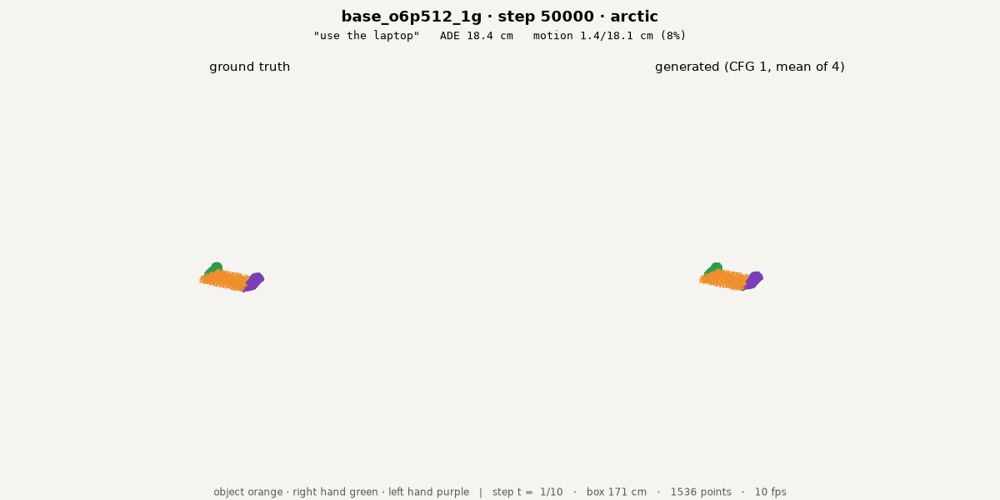
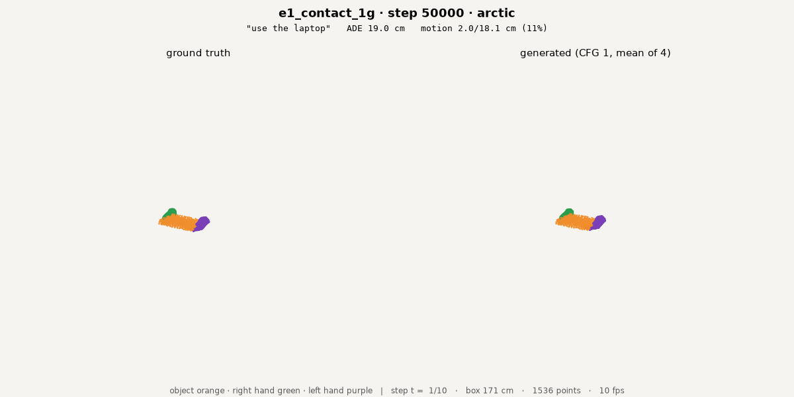

What actually improves a point-flow world model: contact, kinematics, or neither?
3D-WAM · seven arms on one rig · overnight campaign 2026-09-07/08
Lab meeting
2026. 09. 08
Presented by beomjun
Overview
[TL;DR] Contact identity wins interaction; robot co-training wins accuracy.
- 7 of 7 arms, matched 30k
- Nine closest systems read
- Discuss: which axis we claim


arms 9230 · 9231 · 9233 · 9577 · 9588 · 9590 · 9592 · eval bundles 9581–9593 · harvest review/auto/night_0908.json
Method (1): Six auxiliaries against one control
Every arm is one variable on a byte-identical rig.
- Contact: E1 flag · E2 partner identity
- Structure: E3 two-stream blocks
- Kinematic: A2 object motion (HumanEgo)
| arm | what it adds | prior art |
|---|---|---|
| E1 | frame-0 contact flag in; per-point contact head (BCE) | — |
| E2 | per point, WHO it touches: entity + hand part | ContactGen part map |
| E3 | separate hand/object block params, one attention | RLDX-1 multi-stream |
| A2 | each object patch predicts its own rigid motion | HumanEgo L_OM (+17.5 pts) |
| A3 | noised conditioning frame (closed-loop gap) | SVD micro-conditioning |
| A4 | 10 % Sharpa co-training | — |
shared rig: no history · stride 4 · 6 objects × 512 pts · d512/depth8 ≈ 39M · eff batch 32 · 50,000 steps = 8.2 epochs · 1×H100
Method (2): Where we sit in the field
Every comparable system abstracts the embodiment away; we predict it.
- PointWorld: gripper flow is an input
- HumanEgo: hand = parallel-jaw pair
- ContactFlow: contact extracted, not predicted
| system | embodiment predicted? | dexterity | data |
|---|---|---|---|
| PointWorld ’26 | no — action input | gripper, 300–500 pts | 1300 h robot |
| General Flow ’24 | no — object flow only | n/a | RGBD human video |
| HumanEgo ’26 | pose, not dense | thumb–index pair | 30 min per task |
| EgoWAM ’26 | no — 14-D EE action | gripper | ego human + robot |
| ContactFlow ’26 | no — extracted | grasp points | multi-source |
| 3D-WAM (ours) | yes — with the scene | 16 parts, 512 pts | human only |
arXiv 2601.03782 · 2401.11439 · 2605.24934 · 2607.08436 · 2607.26579 · full read: /experiments/3d-wam/#related
Results
- Standard metrics, 5 s autoregressive rollout
- 5 chained chunks; control is the last row
- Interaction metrics
- Closed loop and cross-embodiment
| arm | ADE cm | zero | vs zero | vs ctl | δ_avg % | surv % |
|---|---|---|---|---|---|---|
| E1 contact flag+head | 16.26 | 18.99 | +2.73 | +0.29 | 47.9 | 37.7 |
| E2 partner identity | 16.15 | 18.99 | +2.84 | +0.40 | 48.2 | 37.4 |
| E3 two-stream | 17.66 | 18.99 | +1.33 | -1.11 | 48.6 | 40.3 |
| A2 object motion | 16.75 | 18.99 | +2.24 | -0.20 | 47.2 | 37.3 |
| A3 cond. noise | 17.98 | 18.99 | +1.01 | -1.43 | 43.8 | 37.4 |
| A4 Sharpa 10 % | 15.88 | 18.99 | +3.11 | +0.67 | 49.2 | 39.9 |
| control | 16.55 | 18.99 | +2.44 | +0.00 | 47.9 | 37.7 |
MATCHED BASIS: every arm at ckpt_0030000 · iroll --mode ar --max-chunks 5 · 10 episodes/dataset × 6 · cfg 1.0 · 16 Euler steps · positive "vs" = better · E3 stopped at 35,322 steps and A2 near 32,000 on the 6 h cap, so final-step reads are not comparable
Results
- Standard metrics, 5 s autoregressive rollout
- Interaction — does the hand actually drive the object?
- E2 contact identity gives the largest OMWC reduction
- Closed loop and cross-embodiment
| arm | OMWC | GT | transport | contact F1 | pair RMS cm | dmin err cm |
|---|---|---|---|---|---|---|
| E1 contact flag+head | 0.552 | 0.074 | 0.42 | 0.69 | 2.57 | 10.29 |
| E2 partner identity | 0.484 | 0.074 | 0.45 | 0.67 | 2.37 | 9.86 |
| E3 two-stream | 0.682 | 0.074 | 0.45 | 0.62 | 2.36 | 12.27 |
| A2 object motion | 0.591 | 0.074 | 0.44 | 0.62 | 2.47 | 10.88 |
| A3 cond. noise | 0.640 | 0.074 | 0.61 | 0.61 | 2.83 | 11.40 |
| A4 Sharpa 10 % | 0.616 | 0.074 | 0.38 | 0.62 | 2.42 | 9.73 |
| control | 0.583 | 0.074 | 0.46 | 0.63 | 2.41 | 10.41 |
wam.eval.metrics.interaction_terms on the AR rollout · 2 cm contact threshold · transport 1.0 = carried as far as ground truth
Results
- Standard metrics, 5 s autoregressive rollout
- Interaction metrics
- Closed loop, and the field's own yardstick
- only E1 got a GR-1 slot — the eval lane was saturated
| measurement | value | reference | basis |
|---|---|---|---|
| GR-1 closed loop, E1 @30k | 0 / 3 success | median final hand–object 19.67 cm | PnPCanToBowl, replan every 4 frames |
| General Flow, human→robot | 81 % success | 18 tasks, 6 scenes, no finetune | their rig, object flow + planner |
| HumanEgo, real robot | 92.5 % success | 30 min human video per task | their rig, thumb–index gripper |
| EPE at 1 s, control / E1 | 12.50 / 11.22 cm | zero-motion 14.65 cm | ours: all valid points, hand predicted |
| PointWorld ℓ2 at 1 s | 3.00 cm | zero-shot, held-out real scenes | movers only, gripper given, 1B params |
last two rows share a horizon and a unit, NOT a protocol: PointWorld scores movers only and is handed the gripper trajectory; ours scores every valid point and must generate the hand
Discussion & Action items
Contact helps interaction, data helps accuracy, structure costs steps.
Decided:
- Matched 30k is the basis — E3 and E2 never reached 50k on the 6 h cap
Discussion:
- Paper's axis — contact supervision vs dexterous joint prediction → the latter; contact is cited prior art, and our contact gain is real but small (owner)
- Next contact arm — keep discrete parts vs ManiDext continuous correspondence → continuous; they measured discrete worse on every metric (owner)
- Compute budget — fixed 6 h vs fixed steps → fixed steps; two arms were truncated and one lost its 50k read entirely (owner)
Action items:
- Continuous-correspondence E2, from ManiDext's ablation (agent · 1 day)
- Rerun E3 and A2 step-matched, not hour-matched (agent · 1 day)
- DexJoCo integration: Allegro sampler + link→MANO map (agent · 2 days)
- Sharpa beyond TACO — A4's gain is confounded with more TACO (agent · TBD)
Appendix · Related work, read in detail
Each neighbour owns one axis; none predicts a dexterous embodiment.
- Contact supervision is prior art — we cite, not claim
| system | establishes | stated limitation (= our opening) |
|---|---|---|
| PointWorld ’26 | point flow at scale: 1B params, ~2M traj; zero-shot ℓ2 0.0300 m | static initial state · "correlation vs causation" · AR drift · gripper only · robot is an INPUT |
| General Flow ’24 | 81 % zero-shot human→robot, 18 tasks, 6 scenes, no finetune | object flow only — the hand is not predicted, so a separate policy consumes it |
| HumanEgo ’26 | 92.5 % real from 30 min/task; auxiliaries +25 pts (obj motion +17.5) | hand = parallel-jaw thumb–index · per-task video · ~1 cm ceiling · no deformables |
| EgoWAM ’26 | 3D motion flow beats pixels/DINO in-domain by 20–30 % | "learning novel motion primitives from human data remains out of reach" |
| ContactFlow ’26 | contact-point trajectories transfer across embodiments | contact EXTRACTED by HaMeR+HACO at train and test; HACO "not reliable" at detecting contact |
| ContactGen ’23 / ManiDext ’24 | per-object-point contact + 16-part hand map; continuous correspondence beats discrete | grasp synthesis, not dynamics; ManiDext ignores the environment (lifts from below a table) |
also read: iMaC (contact as control, FID 38.81→36.96) · ContactWorld (point-cloud 32.1 % vs wrist 20.7 %) · HACO (imbalance) · OA-WAM
Appendix · setup · what the literature changed · cut list
- Rig
- no history · chunk_stride 4 · ≤ 6 objects × 512 pts + 2 hands × 512 · k = 8 part-major Hilbert patches · full 3-D attention · v-parameterisation · 16 Euler steps · EMA 0.999 · d512/depth8/heads8 ≈ 39.4 M
- Optim
- AdamW 3e-4, warmup 300, cosine to 0.1× · eff batch 32 · 50,000 steps = 8.2 epochs of the stride-4 index (194,612 train chunks) · 1×H100, ~0.443 s/step
- Data
- corpus v2: taco · arctic · dexycb · oakink2 · grab · hot3d · contact-window trim keeps 89.9 % (194,612 of 216,417) · 5,645 human + 1,148 Sharpa episodes (Sharpa = TACO only)
- Eval
- PRIMARY 5 s AR rollout (5 chained chunks) with zero-motion references · interaction block · GR-1 closed loop via eval_fast (6.5 min, 2 GPUs)
- E2 head learned
- the auxiliary is not decorative: entity accuracy on CONTACTING points 5.7 % → 71.3 %, hand-part accuracy 60.8 % → 84.3 %, and accuracy at contact ONSET (the rare, hard frames) 6.0 % → 78.6 %. Its loss share drifted to 0.55 by the end, well above the 5–20 % band, because loss/fm keeps falling while the CE plateaus — the weight should decay with fm, not be fixed.
- Truncated arms
- the 6 h wall-clock cap, not a step target, ended three arms: E3 at 35,322 steps (two-stream = 0.612 s/step, 38 % slower than the control), E2 at 49,165 (0.439) and A2 near 32,000 (0.669, 51 % slower — the Kabsch targets). Neither E3 nor E2 wrote weights_final.pt, so neither has a final-step evaluation at all. That is why the matched 30,000-step checkpoint is the primary basis.
- Length matters
- E1 against the control is +0.29 cm ADE and OMWC 0.552 vs 0.583 at the matched 30k, but +1.23 cm and 0.399 vs 0.571 at 50k on its own (larger, 78-episode) basis. The matched table therefore UNDERSTATES the contact arms, consistent with this project's repeated finding that composition and auxiliary effects grow with training length.
- E2 fixes
- contact_nn is stored hand→object ONLY, so object rows were unlabelable — inverted the map (recovers ~84 %); class-balanced CE because the corpus is 24:1 and plain CE collapsed to 97.4 % accuracy at exactly 0 % on contacting points
- Lit → experiment
- HumanEgo's ablation gives +17.5 pts to an object-motion auxiliary and has NO contact term → arm A2 imports it. HACO's imbalance analysis predicted E2's collapse exactly → class-balanced objective. ManiDext beats ContactGen's discrete parts with continuous correspondence → the indicated next arm.
- Honest limit
- Nearest-neighbour partners are recoverable from a predicted point cloud, so no auxiliary here adds information the flow loss lacks — they reshape optimisation. Four earlier interventions in this family came back null; the one hard constraint (inference-time object gate) took OMWC 0.127 → 0.012.
- Behind
- General Flow 81 % and HumanEgo 92.5 % real-robot vs our 0/3 on GR-1; PointWorld 1B params on ~2M trajectories vs 39M on 5,645 episodes.
CUT: four discarded E2 designs (world-frame touch point · InfoNCE patch↔patch with a dustbin · two-channel proximity field · rigid SE(3) decoder — the last rejected by the owner as "essentially a new framework") · the proximity field survives in the code, default off, as a rendered affordance diagnostic · DexJoCo remains uninstalled-into-the-loop · VITRA 10 % mixture and partial observability never ran · E3 varies architecture AND parameter count (39M → 65M) so a width-matched control is owed.
code ~/3d-wam/code · configs base_o6p512_1g · e1_contact_1g · e2c_partner_1g · e3_twostream_1g · a2_objmotion_1g · a3_condnoise_1g · a4_sharpa10_1g